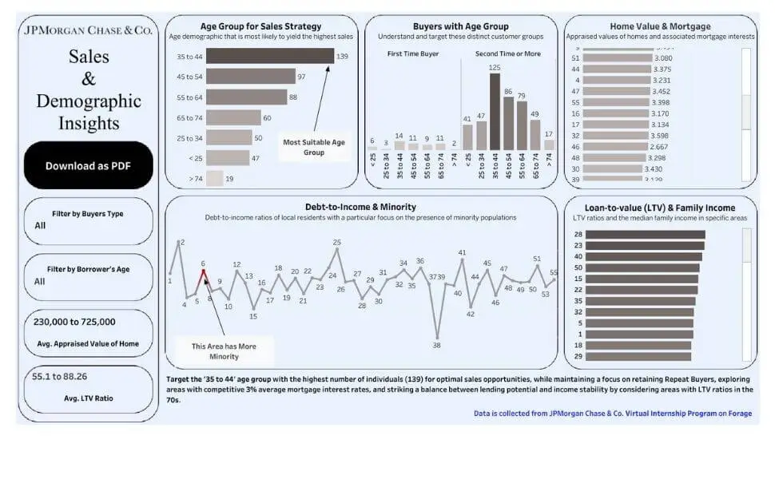

Mortgage Data Analysis
Project Information
- Category: Data Analysis / Strategy
- Client: JP Morgan Chase (Forage)
- Tools: Excel, Tableau, Lucidchart
- Focus: Sales & Demographic Insights
- Live Demo: View Dashboard
Sales and Demographic Insights
A comprehensive analysis of mortgage data to extract meaningful business insights, leveraging Excel for processing and Tableau for visualization to inform sales strategies.
Situation
We focused on a home loan dataset containing approximately 500 data points. The goal was to identify key trends and insights to inform sales strategies and improve business operations. The dataset required significant cleaning and processing to ensure accuracy.

Interactive Tableau Dashboard
Task
The primary task was to perform detailed data analysis and create visualizations to uncover actionable insights across dimensions such as:
- Buyer demographics (Age, Income).
- Loan-to-value ratios vs. Median family income.
- Debt-to-income ratios in minority-prone areas.
- Home value distribution.
Action
1. Data Analysis (Excel)
Cleaned the raw dataset and created pivot charts to derive insights on loan-to-value ratios and trends among first-time vs. second-time buyers.
2. Visualization (Tableau)
Designed a dynamic dashboard to showcase economic landscapes and area-specific insights using interactive filters.
Result & Key Insights
The comprehensive analysis yielded specific strategic recommendations:
- Target Demographics: The 35-44 age range is the most suitable target for sales strategies, showing a high concentration of both first-time and repeat buyers.
- Loan Products: There is high demand for mortgages within specific Loan-to-Value ranges, suggesting opportunities for competitive rate offers.
- Market Opportunities: Identified opportunities for targeted financial solutions and community engagement in minority-prone areas.
- Economic Landscape: Home values are normally distributed with an average of approximately $430K.
This structured analysis provided a robust foundation for informed decision-making, allowing JP Morgan Chase to tailor their mortgage products to specific demographic needs.